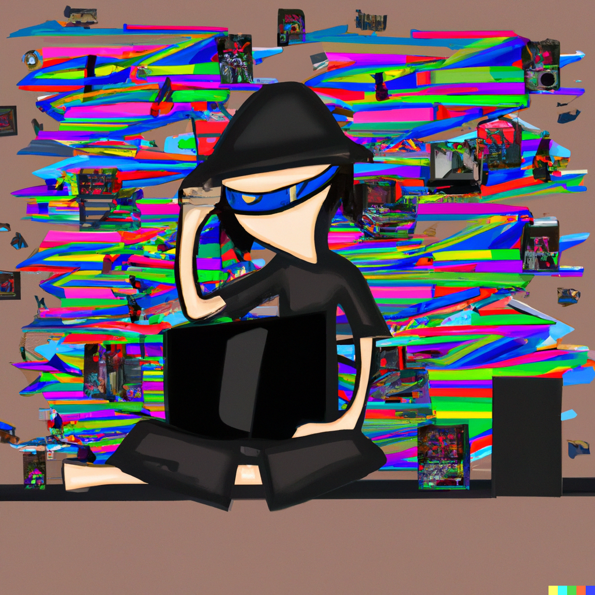
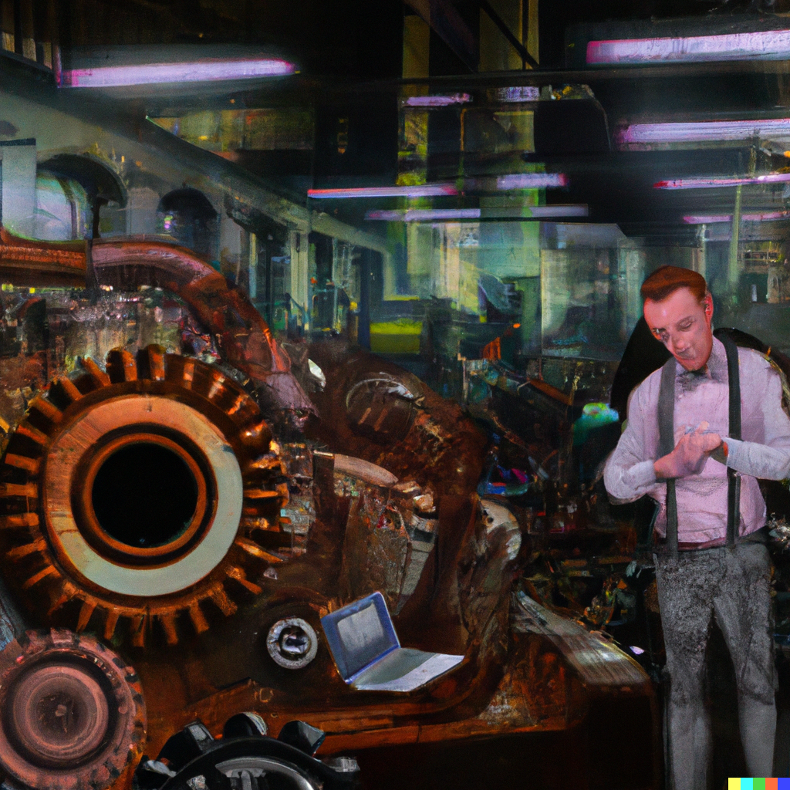

Cristian Gabriel Calvo
SysAdmin/Devops
About Me.
Curious, self-taught, and responsible - these are just a few words that describe me. I'm a private investor with knowledge in accounting and economics, and I have a passion for history, technology, and music. In addition, I used to manage a paintball field and love participating in the sport. I have experience organizing events and was also a member of a music band.
Aside from my native language, I'm also proficient in English, allowing me to communicate effectively and understand texts in this language. I consider myself a cultured and fun person, and I thrive in relaxed work environments.
Experience for Sysadmin.
As a SysAdmin/DevOps professional, I have a strong background in Linux and shell scripting. Additionally, I have experience with programming languages like C++, HTML, and CSS. I am currently preparing for the LPIC-1 certification to further expand my Linux knowledge and skills in this field. I also have expertise in Docker, Kubernetes, and GitHub, and have a good understanding of networking concepts. My ultimate goal is to become an expert in server administration, with a special focus on Linux, and eventually transition into the cybersecurity field. I am dedicated to delivering quality work, and have a passion for learning and problem-solving. Let's connect and discuss how my skills and experience can contribute to your team.
Prior Experience.
With 24 years of experience as an independent professional in agricultural machinery repair, I am a seasoned leader with a proven track record of supervising a team of two direct reports. My unwavering dedication to providing high-quality service to clients has earned me a reputation as a go-to expert in the industry. I pride myself on delivering personalized attention to each of my clients and have a keen ability to creatively solve problems. With knowledge in billing and accounting, I have been able to effectively manage my business's finances. My ultimate goal is to continue helping clients keep their machinery in optimal condition while providing them with exceptional service.